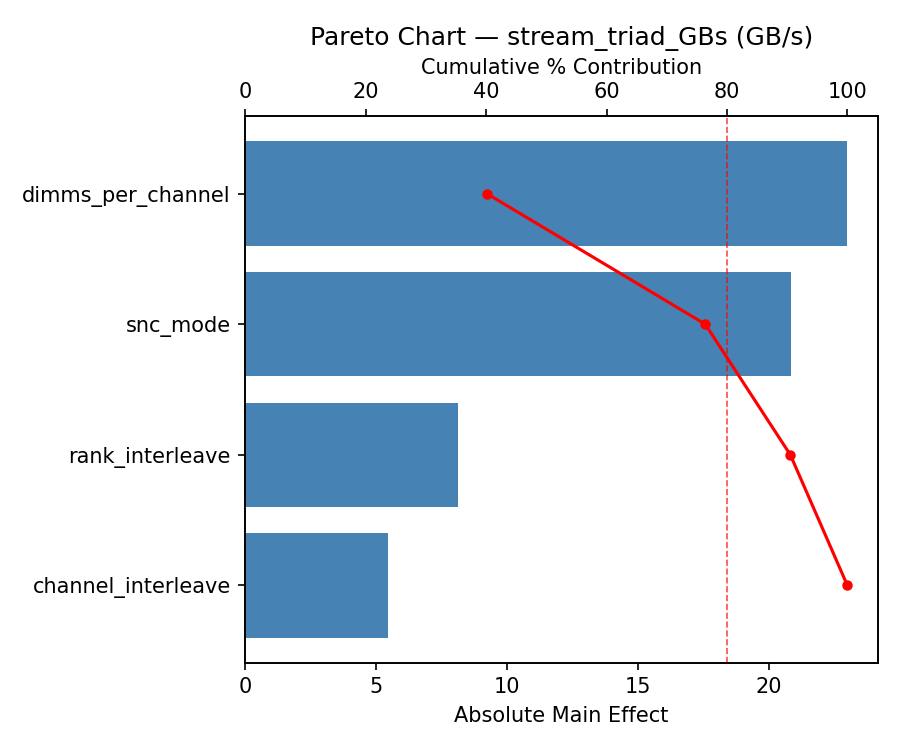
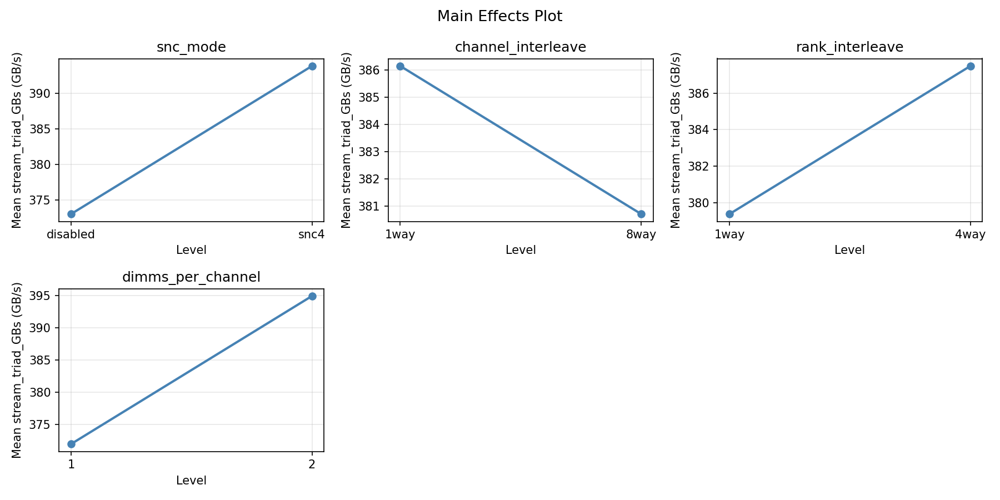
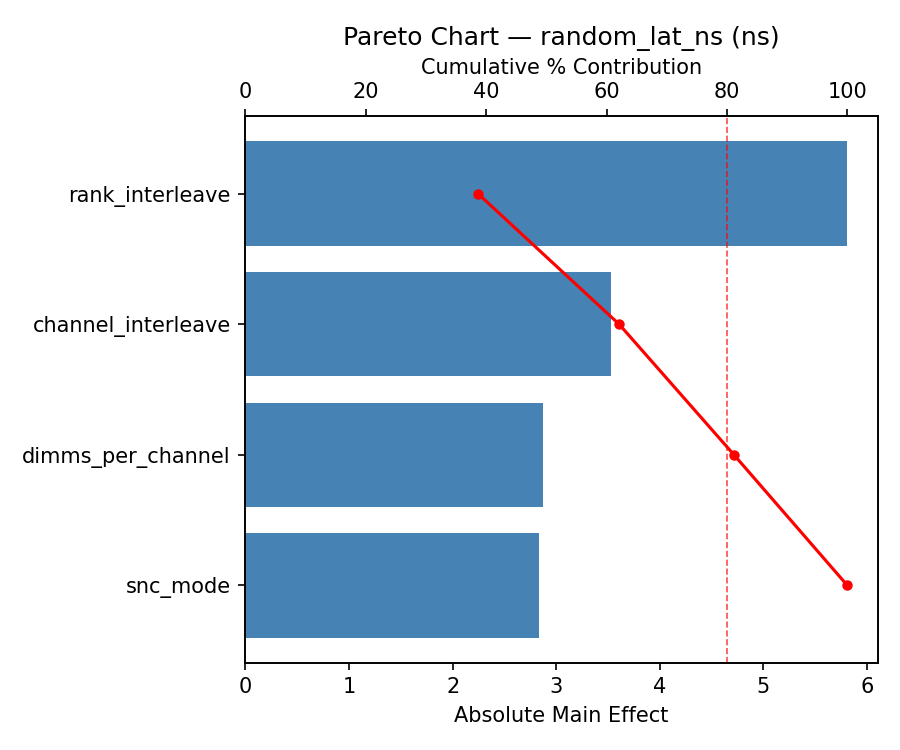
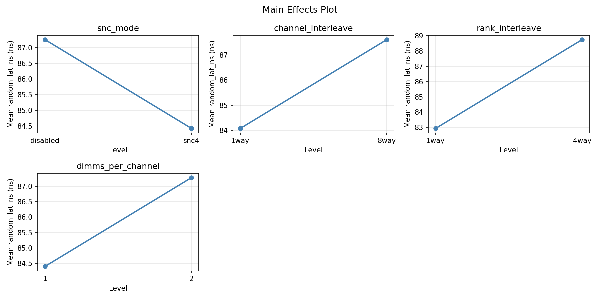

Experimental Setup
Factors
| Factor | Levels | Type | Unit |
|---|
| snc_mode | disabled / snc4 | categorical | — |
| channel_interleave | 1way / 8way | categorical | — |
| rank_interleave | 1way / 4way | categorical | — |
| dimms_per_channel | 1 – 2 | continuous | — |
Fixed: sockets = 2, channels_per_socket = 8, dimm_type = DDR5-4800, processor = Xeon 8490H
Responses
| Response | Direction | Unit |
|---|
| stream_triad_GBs | ↑ maximize | GB/s |
| random_lat_ns | ↓ minimize | ns |
Experimental Matrix
The Full Factorial Design produces 16 runs. Each row is one experiment with specific factor settings.
| Run | snc_mode | channel_interleave | rank_interleave | dimms_per_channel |
|---|
| 1 | disabled | 8way | 4way | 2 |
| 2 | snc4 | 1way | 1way | 2 |
| 3 | disabled | 8way | 1way | 2 |
| 4 | disabled | 8way | 4way | 1 |
| 5 | snc4 | 8way | 4way | 1 |
| 6 | snc4 | 1way | 4way | 1 |
| 7 | snc4 | 8way | 1way | 1 |
| 8 | snc4 | 1way | 1way | 1 |
| 9 | disabled | 1way | 1way | 2 |
| 10 | disabled | 1way | 4way | 1 |
| 11 | snc4 | 8way | 1way | 2 |
| 12 | snc4 | 8way | 4way | 2 |
| 13 | disabled | 8way | 1way | 1 |
| 14 | snc4 | 1way | 4way | 2 |
| 15 | disabled | 1way | 1way | 1 |
| 16 | disabled | 1way | 4way | 2 |
How to Run
$ python doe.py info --config use_cases/26_memory_channel_interleaving/config.json
$ python doe.py generate --config use_cases/26_memory_channel_interleaving/config.json --output results/run.sh --seed 42
$ bash results/run.sh
$ python doe.py analyze --config use_cases/26_memory_channel_interleaving/config.json
$ python doe.py optimize --config use_cases/26_memory_channel_interleaving/config.json
$ python doe.py report --config use_cases/26_memory_channel_interleaving/config.json --output report.html
Analysis Results
Generated from actual experiment runs.
Response: stream_triad_GBs
Pareto Chart

Main Effects Plot

Response: random_lat_ns
Pareto Chart

Main Effects Plot

Full Analysis Output
=== Main Effects: stream_triad_GBs ===
Factor Effect Std Error % Contribution
--------------------------------------------------------------
snc_mode 19.1888 11.9395 27.5%
channel_interleave 18.3613 11.9395 26.3%
dimms_per_channel -18.2038 11.9395 26.0%
rank_interleave -14.1438 11.9395 20.2%
=== Interaction Effects: stream_triad_GBs ===
Factor A Factor B Interaction % Contribution
------------------------------------------------------------------------
snc_mode channel_interleave -55.7788 47.6%
channel_interleave dimms_per_channel 22.9638 19.6%
rank_interleave dimms_per_channel 17.3238 14.8%
channel_interleave rank_interleave 10.9787 9.4%
snc_mode rank_interleave -6.7738 5.8%
snc_mode dimms_per_channel -3.3188 2.8%
=== Summary Statistics: stream_triad_GBs ===
snc_mode:
Level N Mean Std Min Max
------------------------------------------------------------
disabled 8 373.8400 48.3472 300.0700 454.2600
snc4 8 393.0288 48.3695 321.3700 472.9200
channel_interleave:
Level N Mean Std Min Max
------------------------------------------------------------
1way 8 374.2537 52.9509 300.0700 472.9200
8way 8 392.6150 43.4858 321.3700 454.2600
rank_interleave:
Level N Mean Std Min Max
------------------------------------------------------------
1way 8 390.5063 60.5369 300.0700 472.9200
4way 8 376.3625 33.2933 333.7600 426.8500
dimms_per_channel:
Level N Mean Std Min Max
------------------------------------------------------------
1 8 392.5362 41.4241 344.6700 472.9200
2 8 374.3325 54.6091 300.0700 454.2600
=== Main Effects: random_lat_ns ===
Factor Effect Std Error % Contribution
--------------------------------------------------------------
snc_mode -12.2800 2.1793 64.2%
channel_interleave 4.1800 2.1793 21.8%
dimms_per_channel -2.2275 2.1793 11.6%
rank_interleave -0.4500 2.1793 2.4%
=== Interaction Effects: random_lat_ns ===
Factor A Factor B Interaction % Contribution
------------------------------------------------------------------------
snc_mode dimms_per_channel 6.3400 35.0%
snc_mode rank_interleave -5.3875 29.7%
rank_interleave dimms_per_channel 3.6650 20.2%
channel_interleave rank_interleave 1.3625 7.5%
channel_interleave dimms_per_channel 1.3550 7.5%
snc_mode channel_interleave -0.0175 0.1%
=== Summary Statistics: random_lat_ns ===
snc_mode:
Level N Mean Std Min Max
------------------------------------------------------------
disabled 8 91.9813 6.5525 81.6300 101.0500
snc4 8 79.7013 5.8077 72.8300 88.6800
channel_interleave:
Level N Mean Std Min Max
------------------------------------------------------------
1way 8 83.7512 7.5744 73.0900 92.6200
8way 8 87.9313 9.7714 72.8300 101.0500
rank_interleave:
Level N Mean Std Min Max
------------------------------------------------------------
1way 8 86.0662 7.0340 77.1400 98.8900
4way 8 85.6163 10.6416 72.8300 101.0500
dimms_per_channel:
Level N Mean Std Min Max
------------------------------------------------------------
1 8 86.9550 10.9792 72.8300 101.0500
2 8 84.7275 6.2815 76.2900 94.7500
Optimization Recommendations
=== Optimization: stream_triad_GBs ===
Direction: maximize
Best observed run: #12
snc_mode = disabled
channel_interleave = 1way
rank_interleave = 1way
dimms_per_channel = 2
Value: 472.92
Factor importance:
1. dimms_per_channel (effect: 46.6, contribution: 59.0%)
2. channel_interleave (effect: 26.6, contribution: 33.7%)
3. snc_mode (effect: -3.4, contribution: 4.3%)
4. rank_interleave (effect: -2.3, contribution: 2.9%)
=== Optimization: random_lat_ns ===
Direction: minimize
Best observed run: #8
snc_mode = disabled
channel_interleave = 8way
rank_interleave = 4way
dimms_per_channel = 2
Value: 72.83
Factor importance:
1. dimms_per_channel (effect: -5.9, contribution: 42.0%)
2. snc_mode (effect: 5.7, contribution: 40.1%)
3. rank_interleave (effect: 1.7, contribution: 12.1%)
4. channel_interleave (effect: -0.8, contribution: 5.8%)